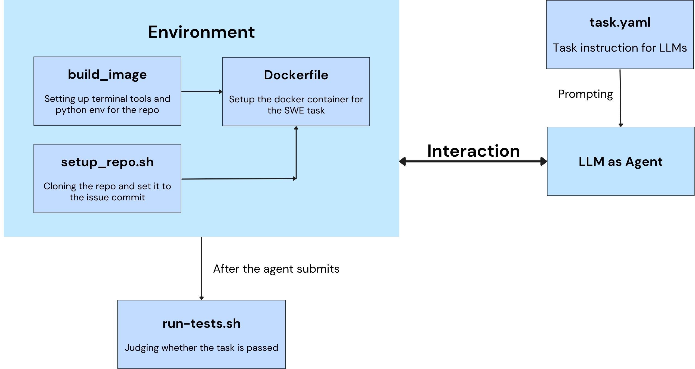

Task Overview#
Overview#
Tasks are the fundamental unit of work in Terminal-Agents. Each task represents a specific problem or challenge that the agent is expected to solve within an isolated Docker environment.
A Task in Terminal Agents is:
A self-contained problem specification with clear instructions
An isolated execution environment (Docker container)
A set of evaluation criteria to determine success
Part of a benchmark suite for agent evaluation
Tasks can range from simple shell operations to complex software engineering problems like fixing bugs in Github real-world repositories.
Check autopilot/evaluation/tasks/base.py for structure of a basic Task.
While a task is an individual problem instance, a benchmark is a collection of related tasks organized under a common evaluation framework. In Terminal-Agents, we integrate multiple benchmarks
Available Task and Benchmarks#
Benchmark Name |
Task Class |
Eval Criteria |
Directory |
Source |
|---|---|---|---|---|
|
|
rule-based |
|
https://github.com/laude-institute/terminal-bench |
|
|
rule-based |
|
- |
|
|
rule-based |
|
- |
|
|
rule-based |
|
https://github.com/SWE-bench/SWE-bench |
|
|
swebench |
|
- |
|
|
swebench |
|
- |
|
|
swebench |
|
https://github.com/SWE-Gym/SWE-Gym |
|
|
swebench |
|
- |
|
|
string-match |
|
https://github.com/TIGER-AI-Lab/MMLU-Pro |
|
|
llm-judge |
|
https://github.com/snap-research/locomo |
You could check modules in autopilot/evaluation/tasks/ for more detailed task classes.
Task Pipeline#

Note: Certain task types may include task-specific or variant steps, but the overall workflow follows the diagram above.
Task Lifecycle#
Task Selection and Instantiation: A Task class could be registered and chosen from with
TaskRegistry.Task Environment Setup: Launch the Docker container for the task via
Task.launch_container. In this step, the docker image will be built and run, and necessary files will be copied from host to the container.Task Execution: The agent is invoked with the task description within the container.
Evaluation: After agent execution, the result files are copied back to the host, and the task’s evaluation is executed based on specific eval criteria.
Cleanup: Clean up Docker resources based on cache level via
Task.cleanup_resources.
Task Formats#
Different benchmarks use different task configuration formats. Check corresponding docs for clarifications.
SWE-Bench Format, Terminal-Bench Task Format, MMLU-Pro Format, Locomo Format
Task Implementation#
Terminal-Agents supports multiple benchmark suites, each with its own task implementation.
Task (Abstract Base Class)
├── TerminalBenchTask
│ ├── TerminalBenchFocusTask
│ └── TerminalBenchSampleTask
├── SWEBenchTask
│ ├── SWEBenchVerifiedTask
│ │ └── SWEBenchVerifiedFocusTask
│ └── SWEGymTask
├── MMLUProTask
└── LocomoTask
Key Task Properties#
Every task implementation must define these abstract properties:
Property |
Type |
Description |
|---|---|---|
|
|
Path to Docker Compose configuration file |
|
|
Unique Docker container identifier for the task instance |
|
|
Human-readable task instruction given to the agent |
|
|
Path to evaluation script inside the container |
|
|
Environment variables for Docker operations |
|
|
Files to copy into container (source, target) |
Key Task Methods#
Method |
Purpose |
|---|---|
|
Sets up Docker container, builds image, copies files |
|
Copies result files from container back to host |
|
Stops and removes Docker container and images |
|
Returns path to reference solution (if available) |
|
Factory method to create task instances |
Creating New Tasks#
For existing benchmark#
To create new tasks for existing benchmarks such as Terminal-Bench and SWE-Bench, you could create a new directory under corresponding benchmark directory, for example:
mkdir external/terminal-bench/tasks/my-new-task
Then create necessary files (vary from benchmark types) for that task, including but not limited to files describing the task/problem/conversation, files for testing, and files for building the environments. Note to make scripts executable, if applicable.
Then the task will be automatically discovered by TerminalBenchTask.task_names().
For a completely new benchmark#
Create task class in
autopilot/evaluation/tasks/my_benchmark.py:
@TASKS.register("my_benchmark")
class MyBenchmarkTask(base.Task):
def __init__(self, name: str, benchmark: str) -> None:
super().__init__(name, benchmark)
self.dir = os.path.join("external/my-benchmark/tasks", name)
@classmethod
def task_names(cls) -> List[str]:
"""Return list of task names."""
tasks_dir = "external/my-benchmark/tasks"
return [d for d in os.listdir(tasks_dir)
if os.path.isdir(os.path.join(tasks_dir, d))]
@property
def description(self) -> str:
"""Load task description from task.yaml."""
with open(os.path.join(self.dir, "task.yaml")) as f:
return yaml.safe_load(f)["instruction"]
...
Refer to the implementation of Task classes of different benchmarks in autopilot/evaluation/tasks/.
Register in module
autopilot/evaluation/tasks/__init__.py:
from .my_benchmark import MyBenchmarkTask
Create or pull your custom task directory structure. For example (terminal-bench task format):
external/my-benchmark/
└── tasks/
└── task-1/
├── task.yaml
├── docker-compose.yaml
└── run-tests.sh
Use the new benchmark:
autopilot evaluate --benchmark my_benchmark --eval-criteria rule-based --task task-1